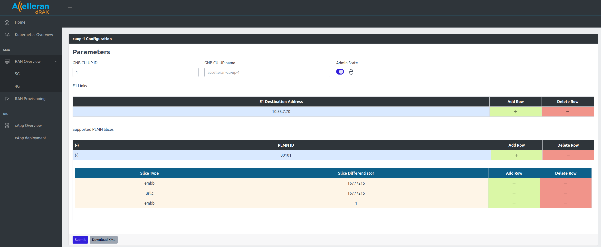
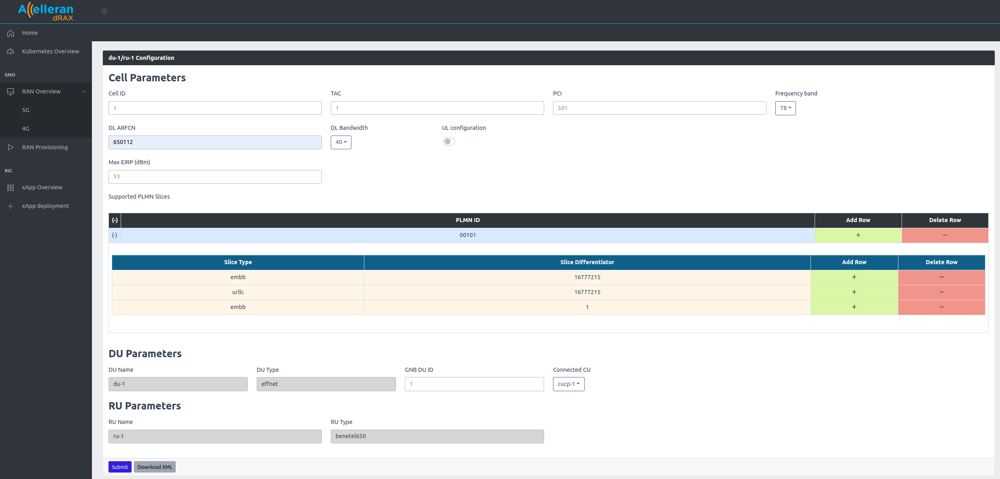
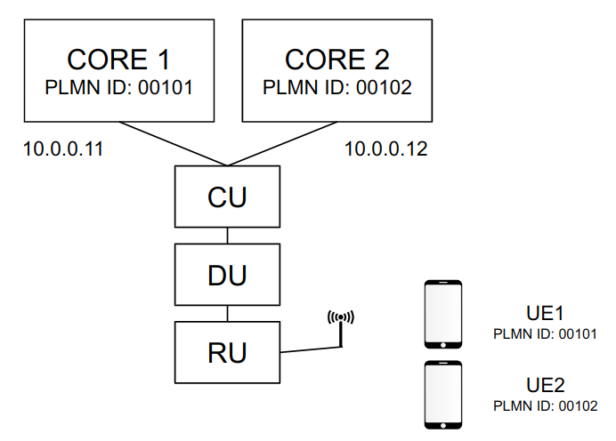
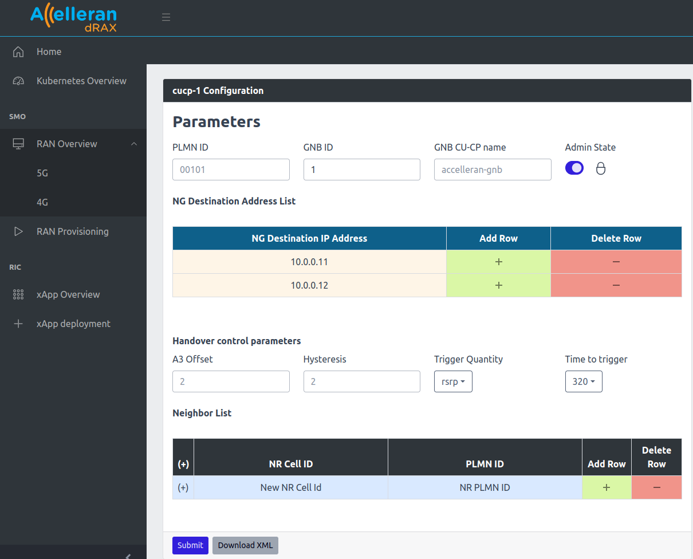
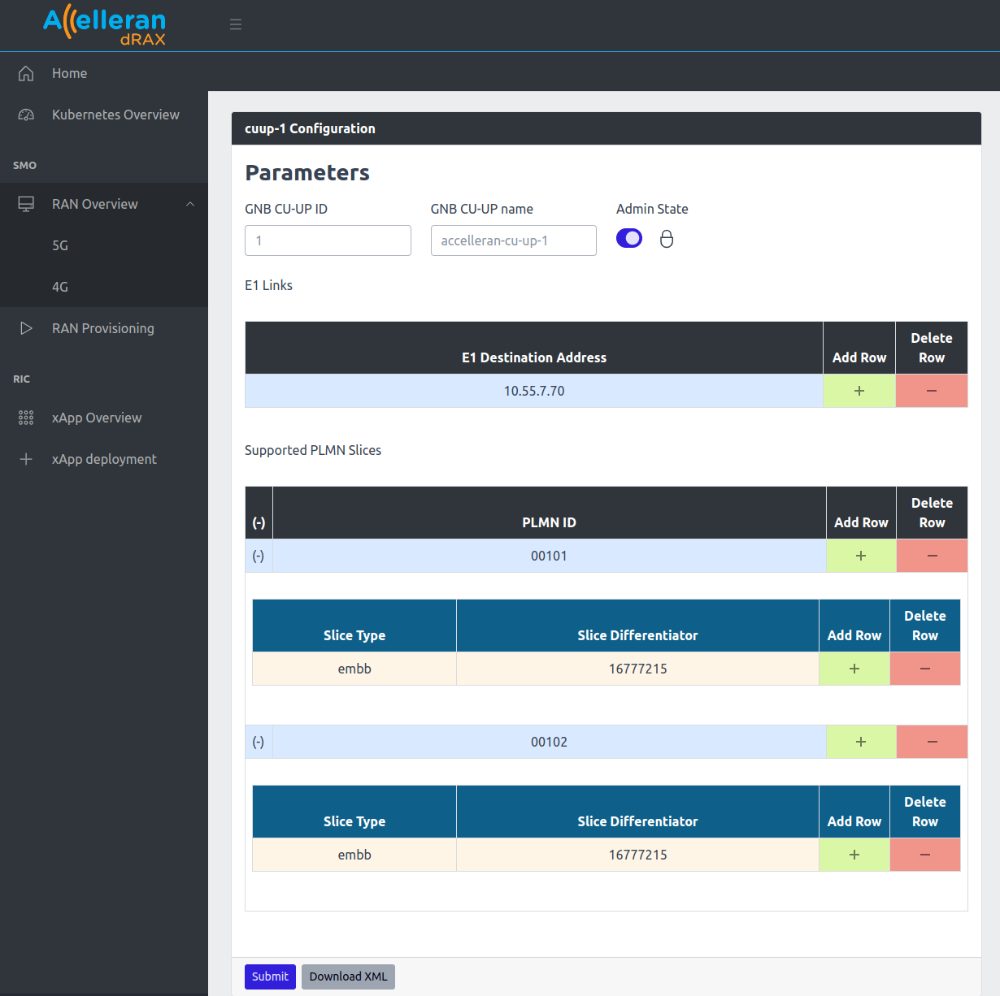
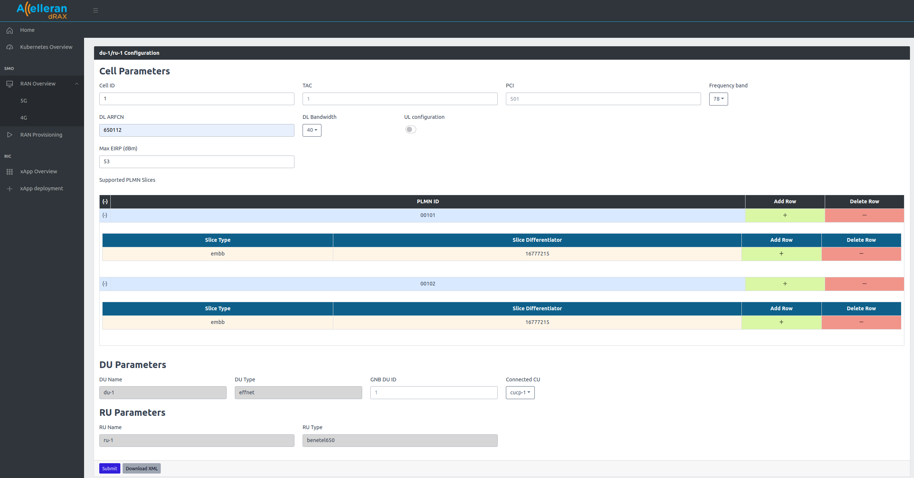

Multi Slice and MOCN Configuration¶
1. Multi Slice Configuration¶
To enable support for multiple slices in a cell, the different components of the network must be configured correctly to support them.
As an example, assuming we want to configure three slices: (SST:1), (SST:1,SD:1), (SST2)
1.1. CU-UP Multi Slice Configuration¶
Here, the CU UP must be configured with all the slices so that it can offer user plane support for all the slices:
- From the dashboard go to RAN Overview then 5G
- From the CU-UP List, click on configuration.
- Set Admin State to Locked. (To allow changing the CU configuration)
- Add the different slices in the Supported PLMN Slices and then submit.
SD 16777215 (0xFFFFFF) = no SD, SST 1 = eMBB, SST 2 = URLLC

1.2. DU Multi Slice Configuration¶
Similar to the CU UP, the DU must be configured with the slices that it needs to support:
- From the dashboard go to RAN Overview then 5G
- From the DU/RU List, click on configuration.
- Add the different slices in the Supported PLMN Slices and then submit.
SD 16777215 (0xFFFFFF) = no SD, SST 1 = eMBB, SST 2 = URLLC

1.3. Core multi slice Configuration¶
The core connected should support the slices enabled on the cell. In our example the core should be configured with (SST:1), (SST:1,SD:1), (SST2).
The 5G core configuration depends on the vendor chose and is out of the scope of this document. Please contact Accelleran with the details of the 5G core used to provide support if possible.
2. Multi-Operator Core Network (MOCN) Configuration¶
In order to obtain a working setup with MOCN, it is essential that all the network components are aligned and configured coherently to serve the same list of PLMNIDs and slices.
As an example, this section will show how to configure the below scenario, where one cell will broadcast two PLMNIDs so that UE1 will connect to Core1 and UE2 will connect to Core2.

2.1. CU-CP MOCN Configuration¶
Simply the CU-CP must be configured with all the addresses to the cores that are needed.
- From the dashboard go to RAN Overview then 5G
- From the CU-CP List, click on configuration.
- Set Admin State to Locked. (To allow changing the CU configuration)
- Add the first and second core IPs to the NG Address list and then submit.

2.2. CU-UP MOCN Configuration¶
Here, the CU UP must be configured with all the PLMNIDs and Slices that the Core and the Cell will be configured with to support. (Assuming there is only one slice "SST1, SD:0" configured on each of the cores)
- From the dashboard go to RAN Overview then 5G
- From the CU-UP List, click on configuration.
- Set Admin State to Locked. (To allow changing the CU configuration)
- Add the first and second PLMN IDs to the Supported PLMN Slices and then submit.

2.3. DU MOCN Configuration¶
Similar to the CU UP, the DU must be configured with the PLMN IDs and slices that it needs to support.
- From the dashboard go to RAN Overview then 5G
- From the DU/RU List, click on configuration.
- Add the first and second PLMN IDs to the Supported PLMN Slices and then submit.

2.4. Core MOCN Configuration¶
The cores connected should support the PLMN IDs. In our example core1 should be configured with PLMNID 00101, and core2 with PLMNID 00102.
The 5G core configuration depends on the vendor chose and is out of the scope of this document. Please contact Accelleran with the details of the core used to provide support if possible.